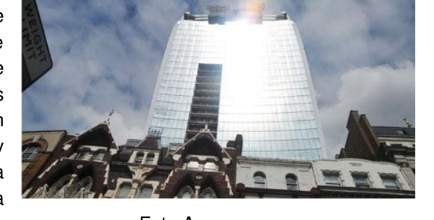
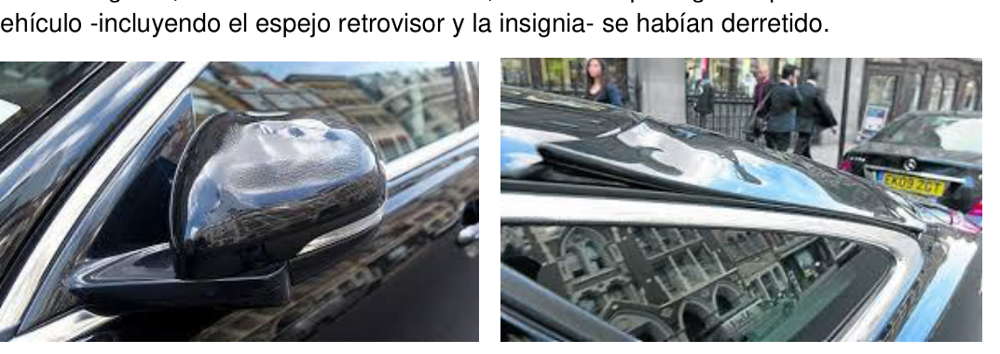
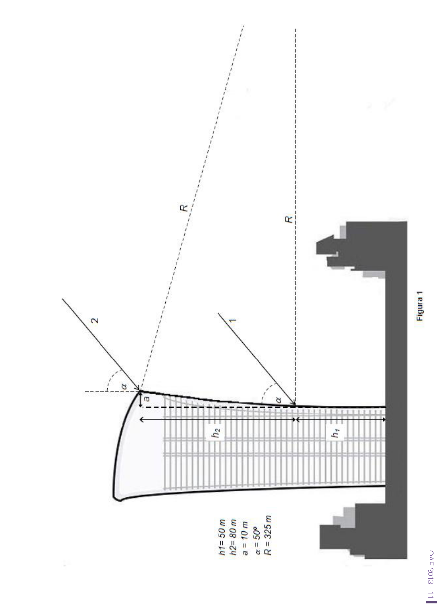

Rascacielos peligroso (Walkie-Talkie)
Problema 3
Rascacielos peligroso.
Un nuevo rascacielos de Londres, conocido informalmente como el “Walkie-Talkie” ha sido acusado de reflejar la luz que fundió las piezas de un coche estacionado en una calle cercana. Este edificio de 37 pisos diseñado por Rafael Viñoly, un arquitecto nacido en Uruguay y educado en Argentina, tiene la forma esquematizada en la Figura 1 (vista lateral de la Foto A).
Foto A Martin Lindsay aparcó su Jaguar XJ negro en el centro financiero de Londres, también conocido como la City de Londres, el jueves 29 de agosto por la tarde. Cuando regresó, unas dos horas más tarde, descubrió que algunas partes de su vehículo -incluyendo el espejo retrovisor y la insignia- se habían derretido. Foto B
Foto C
La compañía de seguros de la empresa constructora, le ha encargado a Ud. que
determine si estos hechos son factibles para responder a los reclamos
económicos del damnificado.
Para ello los constructores le han facilitado el esquema de la Figura 1 que
representa una vista lateral del edificio, las dimensiones relevantes y algunas
características a tener en cuenta, a saber:
- En los primeros 50 m de altura el edificio es recto.
- En los últimos 80 metros, el perfil responden a una curvatura de radio R = 325 m
- A la hora que sucedió el hecho, los rayos solares inciden formando un ángulo de 50º respecto a la normal al suelo. Para cumplir con la tarea, le sugerimos realizar las siguientes consignas: a) Calcule a qué distancia del pie del edificio incide el rayo 1 reflejado.
OAF 2013 - 10 b) Calcule el ángulo que forma la recta tangente a la superficie del edificio con la normal al suelo en el punto de incidencia del rayo 2 . c) Calcule a qué distancia del pie del edificio incide el rayo 2 reflejado. d) Calcule el largo de la región donde se concentra la luz reflejada en el piso. e) Sabiendo que la intensidad de radiación solar promedio que llega a la superficie de la Tierra es de 198 W/m2 y que la reflectividad de la superficie del edificio es del 50%, calcule la intensidad de radiación en el sector iluminado. f) Sabiendo que el espejo retrovisor del auto está confeccionado con PBT, cuyas propiedades están dadas en la Tabla 1, y teniendo en cuenta que de acuerdo a la información brindada por Jaguar el volumen de PBT del espejo es V = 0.0005 m3 y que la superficie expuesta a la luz es S = 0.02 m2, calcule cuanto tiempo debe permanecer estacionado el auto para que comience a deformarse el espejo. (Suponga que la temperatura ambiente es de 20ºC)
Densidad del PBT 1.31 g/cm3 Coeficiente de absorción de radiación 70% Temperatura de inicio de deformación 90 ºC Calor específico del PBT 1500 J/(ºC kg) Tabla 1
OAF 2013 - 11
OAF 2013 - 12 Hoja de soluciones Problema 3: Rascacielos peligroso.
a)
b)
c)
d)
e)
f)
OAF 2013 - 13
Instancia Nacional Prueba Experimental
OAF 2013 - 14 Qué tubooo!!!
Marco teórico
Un tubo de Kundt es un dispositivo que permite estudiar ondas de sonido
estacionarias. El dispositivo consiste de un tubo cilíndrico, cerrado por ambos
extremos. En uno de los extremos se ubica un emisor de ondas sonoras de una
dada frecuencia ( ) y en el otro extremo, un detector de las mismas. El
funcionamiento del tubo de Kundt se basa en la generación de ondas
estacionarias en la región comprendida entre el emisor y el detector. Las ondas
estacionarias se producen al superponerse dos ondas de igual amplitud y
frecuencia ( ), que viajan paralelas al eje del tubo, una de ellas en el sentido
emisor-detector, y la otra en el sentido opuesto (esto es, en el sentido detector-
emisor). Esta última onda resulta de la reflexión de la primera onda (generada
por el emisor) en el extremo del tubo donde se encuentra ubicado el detector.
Las ondas estacionarias se caracterizan por la existencia de zonas donde la
onda tiene amplitud máxima (máximos o vientres) y otras con amplitud cero
(nodos), las cuales tienen posiciones constantes en el tiempo. El número de
nodos y máximos que se establecen dentro del tubo de Kundt depende de la
longitud del mismo y de la frecuencia de la onda emitida; sin embargo la
velocidad de propagación ( ) de la onda permanece constante. La distancia
existente entre dos nodos consecutivos, o entre dos máximos consecutivos,
siempre es igual a media longitud de onda.
La velocidad de propagación de la onda está relacionada con su longitud de
onda y con su frecuencia por la expresión:
[1]
Entonces, en base a la ecuación [1], un tubo de Kundt permite realizar mediciones para determinar la velocidad del sonido.
Descripción del dispositivo de medición El tubo de Kundt que se presenta aquí consiste de una cavidad cilíndrica, cuyos extremos están limitados por un emisor y por un detector de ondas de ultrasonido. La posición del detector se encuentra fija mientras que el emisor se encuentra ubicado en un émbolo cuya posición puede variarse respecto del detector. Esto permite variar la distancia entre el emisor y el detector y, por lo tanto, la longitud de la cavidad cilíndrica. El émbolo está montado sobre un Ondas estacionarias en un tubo Tubo ( cavidad) nodo máximo /2 /2 emisor detector Figura 1
OAF 2013 - 15 calibre (Ver Uso Calibre en Apéndice), mediante el cual se puede medir la separación entre dos posiciones diferentes del mismo Ver Figura 2.
Terminales de la
resistencia
Multímetro
posicionado para
medir
Perilla P, para
cambiar el valor
de
Figura 2
Terminales de
voltaje
Multímetro posicionado
para medir voltajes
OAF 2013 - 16 Emisor El emisor es un dispositivo que genera ondas sonoras en el rango de frecuencias entre 37000Hz y 42000Hz. El emisor se encuentra conectado a un circuito electrónico que permite variar la frecuencia de la onda de ultrasonido. Se puede modificar la frecuencia de la onda generada variando el valor de la resistencia que está conectada al mismo. La relación entre la frecuencia y el valor de la resistencia está dada por la siguiente fórmula:
[2]
donde está dada en kilo Hertz ( ) y en kilo Ohm ( ). Los valores de a y b son:
Nota:
Recuerde que la letra significa kilo = 1000 = 103
El valor de resistencia se puede ajustar rotando la perilla P (ver Figura 2) y se puede determinar utilizando un multímetro colocado en función de óhmetro () (Ver Uso Multímetro en Apéndice)
Detector Es un dispositivo que transforma la amplitud de ondas de ultrasonido a una señal de voltaje eléctrico continuo. Este voltaje se puede medir con un multímetro colocado en la función voltímetro (DCV) (Ver Uso Multímetro en Apéndice).
Funcionamiento Al fijar un valor de la resistencia conectada al generador de ondas, el emisor emite una onda de ultrasonido cuya frecuencia f está determinada por la ecuación [2], y se establecen ondas estacionarias en la cavidad cilíndrica. Modificando la posición del embolo se varía la longitud de la cavidad; cuando la distancia ( ) que separa el emisor del detector es un número entero de semi- longitudes de onda se tiene la denominada condición de resonancia, esto es cuando:
(n es: 1,2,3,4,…)
[3]
Por lo tanto, si se cambia , cambia la cantidad de nodos y máximos en el interior de la cavidad. Esto produce que la señal registrada por el detector varíe, alcanzando valores máximo o mínimos, dependiendo si la posición del detector se corresponde a un máximo o a un nodo de la onda estacionaria.
OAF 2013 - 17
Objetivo:
Determinar la velocidad del sonido.
Consignas
Parte 1
A- Determinar el rango de resistencias que está asociado al rango de
frecuencias ( ) en las que trabaja el equipo. Usar la ecuación 2.
B- Posicionar la perilla P de modo de leer en el multímetro un valor de que
esté dentro del rango de trabajo del equipo. Registrar este valor ( ) con
su correspondiente incerteza.
C- Determinar, usando la ecuación 2, el valor de frecuencia asociado a
. Registrar este valor ( ). con su correspondiente incerteza.
D- Repetir el procedimiento anterior para otros dos valores de resistencia
y . Registrar estos valores y los valores de frecuencia y
correspondientes
Parte 2
E- Posicionar la perilla P de modo de leer en el multímetro uno de los
valores de elegidos ( ).
F- Determinar la posición de un nodo, registrar esta posición.
G- Mover el émbolo y determinar el desplazamiento del emisor
correspondiente a detectar 5 nodos consecutivos de la cavidad cilíndrica.
H- Determinar la longitud de onda.
I- Calcular la velocidad del sonido.
Nota:
-Para realizar las mediciones de voltaje, conecte los cables de tal manera de
obtener una lectura positiva en el display.
- Los nodos están asociados a valores absolutos mínimos de voltaje; estos valores no necesariamente son nulos y tampoco son todos iguales.
- Los valores de voltaje pueden verse afectados por el contacto del operador con el equipo, para que el dato de voltaje sea más confiable no se debe tocar el equipo al registrar dicho valor.
Parte 3 J- Posicionar la perilla P de modo de leer en el multímetro otro de los valores de elegido ( ). K- Ubicar el emisor en una posición correspondiente a un nodo y registrar esta posición como posición inicial. L- Desplazar el emisor de la posición inicial una distancia que se corresponda al siguiente nodo, registrar esta posición. Desplazar nuevamente el embolo hasta el siguiente nodo y registrar esta posición. Realizar este procedimiento al menos 7 veces, esto es desplazar el embolo para encontrar la posición de 7 nodos consecutivos y registrarlas. M- Graficar las posiciones registradas en función del número de nodos que se detectan al desplazar el emisor. N- Ajustar los puntos graficados mediante una recta. O- Determinar la pendiente de la recta y determinar la longitud de onda del sonido dentro del tubo. P- Calcular la velocidad del sonido.
Parte 4 Q- Posicionar la perilla P de modo de leer en el multímetro el tercer valor de resistencia elegido ( ). R- Medir la variación de la señal de voltaje en la salida del detector en función de la posición del émbolo. Realizar el muestreo con intervalos no
OAF 2013 - 18 mayores a 0.5 mm para un rango no inferior a 20mm. Medir aproximadamente 40 valores. S- Hacer un grafico con los valores de voltaje medidos en función de las posiciones del émbolo. T- Determinar la longitud de onda utilizando el gráfico. U- Calcular la velocidad del sonido.
Parte 5 V- Comparar los valores de la velocidad del sonido encontrados. Determinar si estos valores son distinguibles o indistinguibles.
Apéndice:
Uso del calibre
El calibre provisto tiene una apreciación de 0,02mm.
A continuación se describe brevemente como realizar una lectura en el calibre.
Ubicar el cero del nonio (vernier, reglita desplazable)
Leer en la escala milimetrada la cantidad de milímetros que mejor aproxima (por debajo) a la posición del cero del nonio (M).
Determinar la raya del nonio que “coincide” con una correspondiente a la escala milimetrada. Contar el número de divisiones (N) que hay entre el cero del nonio y la raya que “coincide”.
Informar la lectura (M +N0.02) mm. En el ejemplo de la figura, la lectura es: (2+350.02)mm= 2,70mm.
Uso del multímetro A continuación se describe brevemente como realizar una lectura de resistencia.
Verificar que por la resistencia no esté circulando corriente (apagar la fuente).
Ubicar la perilla indicadora en el mayor valor de la escala de ohmios ().
Conectar los cables provistos en los lugares de conexión indicados como COM (cable negro) y en VHz (cable rojo).
Conectar o apoyar firmemente cada uno de los extremos libres de estos cables en los extremos de la resistencia desconocida.
Leer el display. Cambiar la escala, de ser posible, para aumentar la
precisión.
A continuación se describe brevemente como realizar una lectura de voltaje.
Ubicar la perilla indicadora en el mayor valor de la escala de VCC (V—).
Conectar los cables provistos en los lugares de conexión indicados como COM (cable negro) y en VHz (cable rojo).
Conectar o apoyar firmemente cada uno de los extremos libres de estos cables en los terminales en donde se desea medir el voltaje. Leer el display. Cambiar la escala, de ser posible, para aumentar la precisión.
OAF 2013 - 19 Hoja de soluciones
Parte 1 A-
Rango de resistencias.
B- Valor de con su correspondiente incerteza.
C- Valor de con su correspondiente incerteza.
D-
Valores de resistencia y con sus correspondientes incertezas
Valores de frecuencia y con sus correspondientes incertezas
Parte 2 E- NO TIENE PUNTAJE.
F-
Posición de un nodo
G-
El desplazamiento del emisor correspondiente a 5 nodos consecutivos
de la cavidad cilíndrica.
H- Longitud de onda. I- Valor de velocidad del sonido obtenido.
OAF 2013 - 20 Parte 3 J- NO TIENE PUNTAJE.
K- Posición correspondiente a un nodo (posición inicial).
L- Posiciones de 7 nodos consecutivos.
M- Gráfico. HOJA MILIMETRADA
N- Ajustar los puntos graficados mediante una recta. HOJA MILIMETRADA.
O- Pendiente de la recta y longitud de onda del sonido
P- Valor de velocidad del sonido obtenido. Parte 4 Q- NO TIENE PUNTAJE.
R- TABLA DE DATOS
OAF 2013 - 21
OAF 2013 - 22
S- Grafico HOJA MILIMETRADA
T- Longitud de onda obtenida a partir del gráfico.
U- Valor de velocidad del sonido obtenido. Parte 5 V- Son distinguibles o indistinguibles.
OAF 2013 - 23
Primer Prueba Preparatoria Mecánica
OAF 2013 - 24 Problema Teórico 1
Suponga dos cuerpos de masas m1 y m2
colgados, mediante hilos inextensibles y de
masa despreciable, como se muestra en la
figura.
a) Determine la tensión que soporta
cada uno de los hilos.
Considere la situación siguiente: la masa m2
se eleva una altura h (verticalmente) a partir
de la cual se la suelta. Suponiendo que los
hilos soportan una tensión máxima Tc (antes
de romperse) y que el proceso de
rompimiento se produce en un tiempo t*:
b) Cuál de los hilos se romperá primero?
Justifique
c) Cuál es la máxima altura que puede
elevarse la masa m2 antes de que se
den las condiciones para el
rompimiento del hilo?
Se reemplaza el hilo que une a m1 con m2
por un resorte de constante elástica k y
longitud natural l0.
d) Calcule el estiramiento del resorte que une ambas masas cuando el sistema está en equilibrio. Suponga que se eleva la masa m2 una altura h (en forma vertical).
e) Determine la tensión que soporta el hilo en términos del estiramiento del resorte que une ambas masas.
m1
m2
m1
m2
h
OAF 2013 - 25 Problema Teórico 2
Considere una viga de largo L y masa mb, apoyada como se muestra en la
figura 1.
a) Determine la reacción de cada uno de los apoyos (A1 y A2). Suponga que sobre la biga se apoya un cuerpo de masa mc.
b) Calcule la reacción de cada uno de los apoyos en función de la posición del objeto. En el caso a), si los apoyos de la viga consisten en resortes de constantes elásticas k1 y k2:
c) Encuentre las longitudes naturales de cada uno de los resortes para que la viga permanezca horizontal.
A1 mc A2 L1
L2
L3
A1 A2 L1 L2
Figura 1 Figura 2
OAF 2013 - 26 Problema Teórico 3
Una partícula puntual de masa m1 cae por la rampa de la figura e impacta contra otra partícula puntual de masa m2 que está suspendida mediante un hilo de largo L.
a) Si el choque es elástico (o sea que se conserva la energía mecánica), determine la amplitud de la oscilación de la masa que pendula y la componente horizontal de la velocidad de la masa m1 luego del choque. b) Si el choque es plástico (o sea que no se conserva la energía mecánica) y ambas partículas quedan pegadas, determine la amplitud de la oscilación de la masa que pendula. c) Calcule la frecuencia de oscilación del péndulo en cada uno de los casos anteriores. Suponga que m1 es mayor que m2.
m1
L
m2
OAF 2013 - 27 Problema Teórico 1 Hoja de respuestas.
Inciso
puntaje a)
b)
c)
d)
e)
OAF 2013 - 28 Problema Teórico 2 Hoja de respuestas.
Inciso
puntaje a)
b)
c)
OAF 2013 - 29 Problema Teórico 3 Hoja de respuestas.
inciso
puntaje a)
b)
c)
OAF 2013 - 30
Problema Experimental
Determinación del ángulo de reposo de materiales granulados.
Elementos disponibles
Acrílico (caja de CD)
Cinta adhesiva de papel
Un marcador (en lo posible indeleble)
Una regla, transportador.
Hojas en blanco, lápiz.
Una trincheta o cuchillo (para cortar las pestañas de acrílico). Recuerde
que su uso es peligroso y debe tener el máximo cuidado; en lo posible
esta tarea debe ser supervisada por el docente.
Un pequeño embudo de plástico o de papel
Sal fina, entrefina (parrillera) y gruesa.
Azúcar.
Balanza (optativa)
Figura 1. Consigna 1 Armar el aparato de medición (celda de Hele-Shaw). Procedimiento
- Desarme la caja de CD, quedándose sólo con las caras transparentes. Figura 1.
- Con la trincheta, haciendo presión, corte las pestañas de acrílico que hay en su interior (las que sostenían el plástico sobre el que va apoyado el CD).
- Corte la franja de las placas que corresponde a las pestañas en donde están las “bisagras” de la caja. Esta tarea es difícil y puede ser peligrosa, pida el asesoramiento del profesor.
- Una ambas placas, como si fuese a armar nuevamente la caja. Asegúrela y selle los bordes (excepto la boca) con la cinta adhesiva de papel. Figura
OAF 2013 - 31 Consigna 2 Determinar el ángulo de reposo de materiales granulados.
Figura 2 Procedimiento
- Determinar el ángulo de reposo de la sal fina.
- Cargue la “celda” con sal fina (mediante el embudo) hasta aproximadamente la mitad de su altura. Figura 3a.
- Sin que se pierda su contenido rote la celda hasta lograr que se forme una superficie plana horizontal. Figura 3b.
- Vuelva la celda a la posición de trabajo, rotándola suavemente. Figura 3c.
- Determine el ángulo de reposo de la sal fina.
- Repita este procedimiento, al menos 10 veces.
Consigna 3
- Determinar el ángulo de reposo de la sal entre-fina (parrillera), sal gruesa y del azúcar.
Figura 3a Figura 3b Figura 3c
OAF 2013 - 32 Consigna 4
- Determinar la densidad aparente de cada una de las “sales” usadas y, también, la del azúcar.
- Llene con sal un recipiente de volumen conocido.
- Determine la masa de sal empleada para llenar el recipiente.
- Calcule la densidad aparente de los materiales granulados que usó (sal, etc.).
Consigna 5
- Confeccionar un grafico “ángulo de reposo (ordenada) versus densidad aparente (abscisa)”
OAF 2013 - 33 Problema Experimental Hoja de respuestas. Consigna 1 inciso
puntaje
Dispositivo construido.
Consignas 2 y 3 inciso
puntaje
Tabla de valores medidos, correspondientes al ángulo de reposo de cada sal usada y del azúcar.
Consigna 4 inciso
puntaje
Tabla de valores medidos, correspondientes a la densidad aparente de cada una de las “sales” usadas y, también, la del azúcar.
Consigna 5 inciso
puntaje
Grafico “ángulo de reposo versus densidad aparente”
OAF 2013 - 34
Segunda Prueba Preparatoria Termodinámica, Electricidad y Magnetismo
OAF 2013 - 35 Problema Teórico 1
En un recipiente se han medido 300 cm3 de tolueno a la temperatura de 0 ºC y en otro recipiente se han medido 110 cm3 de tolueno a la temperatura de 100 ºC. El coeficiente de dilatación cúbica del tolueno es = 10-3 ºC-1. Se supone que en la mezcla de los líquidos no hay pérdidas de calor con el exterior. Si se mezclan los dos líquidos encuentre: a) una expresión para el Volumen de tolueno a 100 oC en función del volumen de tolueno a 0 oC, V0, y del coeficiente de dilatación cúbica b) la densidad del tolueno a 100 oC, c) la temperatura de equilibrio de la mezcla, d) la densidad del tolueno a la temperatura de equilibrio, e) el volumen de la mezcla,
OAF 2013 - 36 Problema Teórico 2
Una bombilla eléctrica de resistencia Ro = 2 funciona a un voltaje Uo= 4,5 V. Se conecta a una batería de resistencia interna despreciable y fuerza electromotriz U = 6 V mediante un reóstato de cursor que funciona como un potenciómetro. Se desea que la eficiencia (e = potencia consumida en la bombilla / Potencia total de la batería) no sea menor que 0,6.
a) Calcular el valor de la resistencia del reóstato.
b) ¿Cuál es la máxima eficiencia posible?
c) En la situación del inciso b) ¿Cómo se debe conectar la bombilla al
reóstato?
El esquema del circuito eléctrico es el de la figura 1.
OAF 2013 - 37 Problema Teórico 3
Un electrón de carga q = -1.6 x 10-19 C se mueve con una velocidad v = (0.5 x 105 i + 0.5 x 105 j) (m/s). En el momento en que pasa por el punto de coordenadas (1, 1) calcular:
a) El campo magnético B que el electrón crea en los puntos (-1, -1) y (0, 2).
La fuerza que sufre un protón situado en el punto (0, 2) si lleva una velocidad:
b) v = 2 x 105 k (m/s)
c) v = 2 x 105 j (m/s)
Datos: 0 = 4 x 10-7 Tm/A (Nota: los símbolos en negrita denotan vectores)
OAF 2013 - 38 Problema Teórico 1 Hoja de respuestas.
inciso
puntaje a)
V100 =
2p b)
100 =
2p c)
Te =
2p d)
equilibrio =
1p e)
Vmezcla =
3p
OAF 2013 - 39 Problema Teórico 2 Hoja de respuestas.
inciso
puntaje a)
R =
4p b)
emax =
4p c)
Diagrama
2p
OAF 2013 - 40 Problema Teórico 3 Hoja de respuestas.
inciso
puntaje a)
B(-1, -1) =
B( 0, 2) =
4p b)
v =
3p c)
v =
3p
OAF 2013 - 41 Problema Experimental Objetivo:
- Estudiar la potencia calórica de una vela.
Breve descripción
Una vela es un cilindro de cera con un pabilo en el eje para que pueda encenderse y como resultado de la combustión de la cera irradiar luz y calor. La llama de la vela tiene diferentes temperaturas (ver la figura) e irradia calor y luz en todas direcciones. Sin embargo, por el mecanismo de convección, el calor principalmente fluye en la dirección vertical (hacia donde apunta la llama). Figura 1
El flujo de calor que emite la
vela en la dirección de su eje
(vertical) se puede estudiar
mediante el dispositivo que
se esquematiza en la Figura
2. El mismo consiste de un
cubito de hielo, apoyado
sobre una chapa metálica
fina, que está ligeramente
inclinada. Por debajo de la
chapa y en coincidencia con
un eje que pasa por el centro
del cubito se coloca la vela.
La llama de esta última está
a una distancia d de la
chapa. En el extremo inferior
de la chapa se ubica una
jeringa graduada, sin émbolo
y con el extremo fino (donde
va la aguja) tapado (podría
ser reemplazada por una
probeta).
El agua producida por la fusión del hielo se recolecta en la jeringa y se determina
su volumen Va. Determinando Va en función del tiempo (t) y sabiendo el calor
latente del hielo (80cal/g), se puede estimar la cantidad de energía por unidad de
tiempo (potencia) que le ha llegado al hielo proveniente de la vela.
vela jeringa hielo chapa d agua Figura 2 plastilina
OAF 2013 - 42
Consignas
a) Enuncie algunas de las hipótesis que se han realizado en la descripción
previa y que no se han enunciado explícitamente. Algunas que
involucran a la chapa y se relacionan con sus dimensiones. Otras que
se relacionan con la temperatura del ambiente, del hielo, del agua.
b) Mida la temperatura ambiente.
c) Implemente el dispositivo propuesto.
d) Mida el aporte de calor proveniente del ambiente. Determine si es
despreciable o no.
e) Realice las mediciones de Va en función de t para, al menos, tres
distancias chapa-llama (d) diferentes. Cada conjunto debe estar
compuesto por no menos de diez pares (t, Va).
f) Haga un gráfico t vs masa de hielo fundido, correspondiente a cada
distancia d. Verifique si el comportamiento es aproximadamente lineal,
en tal caso ajuste una recta.
g) A partir de los gráficos anteriores estime la potencia (P) recibida por el
cubito de hielo en cada caso.
h) Presente estos resultados en un grafico (d vs P). Extrapole estos
resultados al valor d=0 y determine un valor PM.
Elementos que pueden resultar de utilidad:
- Chapa metálica fina (espesor despreciable).
- Cubitos de hielo (al menos 3).
- Plastilina (para evitar que el hielo deslice como consecuencia de la pendiente con la que se ha puesto la chapa).
- Vela (marca Ranchera o de calidad equivalente).
- Regla, papel milimetrado o cuadriculado, lápiz.
- Jeringa graduada de 10ml o más.
- Cronómetro.
- Soportes, pinzas de madera (tipo broches de los de colgar la ropa).
- Recipientes para agua.
OAF 2013 - 43 Problema Experimental Hoja de respuestas.
Consigna inciso
puntaje a) Hipótesis
b) Valor
c)
Esquema y elementos utilizados
d)
Método utilizado, resultados.
e)
Tablas de mediciones.
f)
Gráficos
g)
Tabla de resultados
h)
Gráfico y valor obtenido de PM
OAF 2013 - 44
Instancias Locales Problemas Teóricos
OAF 2013 - 45



Topic: Geometric Optics Metodi: Ray Tracing, Thin Lens & Mirror Equation Competenze: Physical Reasoning, Mathematical Modeling Objects: Mirror Fonte: Testo (PDF) — p.3
**Riscassari pericolosi (Walkie-Talkie) **
Problema 3
Scattezze pericolose.
Un nuovo palazzo di Londra, Conosciuto informalmente Come el “Walkie-Talkie” è stato accusato di riflettere la luce che ha fonduto i pezzi di Una macchina parcheggiata in una strada
- Non è che. Questo edificio di 37 piani progettato Per Raphael . Viñoly, un Architetto nato in Uruguay e educato in Argentina, ha la forma Il modello di riferimento è stato illustrato in figura 1 (vedere la parte laterale della Foto A).
Foto A Martin Lindsay ha parcheggiato la sua Jaguar XJ nera nel centro finanziario di Londra. nota anche come la City di Londra, giovedì 29 agosto pomeriggio. Quando tornò, circa due ore dopo, scoprì che alcune parti del suo Il veicolo - compreso lo specchio retrovisore e la segnaletica - si era sciolto. Foto B
Foto C La compagnia di assicurazione della società costruttrice, ha incaricato te di fare questo. che determinare se tali fatti sono fattibili per rispondere ai reclami
- La situazione economica del malato. Per questo i costruttori hanno fornito il schema di figura 1 che rappresenta una vista laterale del edificio, le dimensioni rilevanti e alcune caratteristiche da tenere conto, in particolare:
- Alti 50 metri, l’edificio è retto.
- Negli ultimi 80 metri, il profilo risponde ad una curvatura radio R = 325 m
- L’ora in cui è successo, i raggi solari incidono formando un angolo di 50° rispetto al normale sul suolo. Per fare il compito, ti consigliamo di fare le seguenti consigli: a) Calcolare la distanza dal piede del edificio che incide il raggio 1 riflesso.
OAF 2013 - 10 b) Calcolare l’angolo che forma la retta tangente alla superficie del Un edificio con la normalità sul suolo al punto di incidenza del raggio 2 . c) Calcolare la distanza dal piede del edificio che incide il raggio 2 riflesso. d) Calcolare la lunghezza della regione in cui si concentra la luce riflessa nel
- Piano. e) sapendo che l’intensità media di radiazione solare che raggiunge la La superficie della Terra è di 198 W/m2 e la riflettività della La superficie del edificio è del 50%, calcola l’intensità di radiazione in il settore illuminato. f) sapendo che il retrovisore della macchina è realizzato con PBT, Le proprietà di cui al punto 1 sono indicate in tabella 1, e considerando che Secondo le informazioni fornite da Jaguar il volume di PBT del lo specchio è V = 0,0005 m3 e la superficie esposta alla luce è S = Calcola quanto tempo deve rimanere parcheggiato. per iniziare a distorsione dello specchio. (Supponiamo che la temperatura ambiente è di 20°C)
Densità del PBT 1.31 g/cm3 Coefficiente di assorbimento delle radiazioni 70% Temperatura di inizio di deformazione 90 ºC Calore specifico del PBT 1500 J/(ºC kg) Tabella 1
OAF 2013 - 11
OAF 2013 - 12 Scheda di soluzione problema 3: pericolose scintillature.
a)
b)
c)
d)
e)
f)
OAF 2013 - 13
Instanza nazionale Prova sperimentale
OAF 2013 - 14 Che tubooo!!!
Marco teorico Un tubo Kundt è un dispositivo che permette di studiare le onde sonore.
- Stazionari. Il dispositivo consiste in un tubo cilindrico, chiuso da entrambi. estremi. In uno degli estremi si trova un emissione di onde sonore di una la frequenza () e all’altra estremità un rilevatore delle stesse. El Il funzionamento del tubo Kundt si basa sulla generazione di onde i dispositivi di stazionamento nella regione compresa tra l’emittente e il rilevatore. Le onde Le onde stazionarie si producono superponiendo due onde di uguale ampiezza e frequenza (), che viaggiano parallele all’asse del tubo, una delle quali in senso Il sistema di emissione è stato modificato in modo da consentire l’emissione di un’emissione di un’emissione di un’emissione di un’emissione di un’emissione di un’emissione di un’emissione di un’emissione di un’emissione di un’emissione di un’emissione di un’emissione di un’emissione di un’emissione di un’emissione di un’emissione di un’emissione di un’emissione di un’emissione di un’emissione di un’emissione di un’emissione di un’emissione di un’emissione di un’emissione di un’emissione di un’emissione di un’emissione di un’emissione di un’emissione di un’emissione di un’emissione di un’emissione di un’emissione di un’emissione di un’emissione di un’emissione di un’emissione di un’emissione di un’emissione di un’emissione di un’emissione di un’altra. emittente). Questa ultima onda è il risultato della riflessione della prima onda (generata) per l’emissione) all’estremità del tubo dove si trova il rilevatore.
Le onde stazionarie sono caratterizzate dall’esistenza di zone in cui l’onda stazionaria è L’onda ha l’ampiezza massima (massimi o ventri) e altre con l’ampiezza zero (nodoli), che hanno posizioni costanti nel tempo. Il numero di I nodi e i massimi che si stabiliscono all’interno del tubo di Kundt dipendono dalla La lunghezza stessa e la frequenza dell’onda emessa; tuttavia la La velocità di diffusione ( ) dell’onda rimane costante. La distanza esistente tra due nodi consecutivi o tra due massimi consecutivi, E’ sempre uguale alla media lunghezza d’onda. La velocità di diffusione dell’onda è correlata alla sua lunghezza di onda e con la sua frequenza per l’espressione:
[1]
Quindi, basandosi sull’equazione [1], un tubo di Kundt permette di eseguire misurazioni per determinare la velocità del suono.
Descrizione del dispositivo di misura Il tubo di Kundt che si presenta qui è costituito da una cavità cilindrica, Le estremità sono limitate da un emisore e da un rilevatore di onde di Ultrasonico. La posizione del rilevatore è fissa mentre l’emittente si si trova situato su un emblema la cui posizione può variare rispetto al
- Il rilevatore. Questo permette di variare la distanza tra l’emittente e il rilevatore e, quindi la lunghezza della cavità cilindrica. Il tamburo è montato su un onde stazionarie in un tubo Tubo (cavità) nodo massimo /2 /2 emittente Detettore Figura 1
OAF 2013 - 15 calibro (vedi Uso calibro nell’Appendice), con il quale si può misurare la Sezione 2 del medesimo grafico.
Termini della
resistenza
Multimetro
posizionato per
Misurare
Perilla P, per
Cambiare il valore
de
Figura 2
Termini di
Voltaggio
Multimetro posizionato
per misurare le tensioni
OAF 2013 - 16 Ismettitore L’emittente è un dispositivo che genera onde sonore nella gamma di frequenze comprese tra 37000 Hz e 42000 Hz. L’emittente è collegata a un circuito elettronico che permette di variare la frequenza dell’onda ultrasuonica. La frequenza dell’onda generata può essere modificata variando il valore di resistenza che è collegata a esso. Il rapporto tra frequenza e valore della resistenza è dato dalla formula seguente:
[2]
dove è data in kilo Hertz ( ) e in kilo Ohm (). I valori di a e b sono:
Nota: Ricorda che la lettera significa kilo = 1000 = 103
Il valore di resistenza può essere regolato rotando il perilo P (vedi Figura 2) e si può determinare utilizzando un multimetro posizionato in funzione di óhmetro () (Vedere Uso del multimetro nell’appendice)
- Il rilevatore È un dispositivo che trasforma l’ampiezza delle onde ultrasonore in un segnale. di tensione continua elettrica. Questo tensione può essere misurata con un multimetro inserito nella funzione voltometro (DCV) (vedere Uso multimetro nell’Appendice).
Funzionamento Quando si fissa un valore di resistenza collegato al generatore d’onda, l’emittente emette un’ onda ultrasonora la cui frequenza f è determinata dalla equità [2], e si stabiliscono onde stazionarie nella cavità cilindrica. Modificare la posizione dell’embolo varia la lunghezza della cavità; quando il La distanza ( ) che separa l’emissione dal sensore è un intero numero di semiconduzioni Le lunghezze d’onda hanno la cosiddetta condizione di risonanza, cioè quando:
(n es: 1,2,3,4,…)
[3]
Quindi, se si cambia, cambia il numero di nodi e massimi nel all’interno della cavità. Questo provoca che il segnale registrato dal rilevatore varia, raggiungendo valori massimi o minimi, a seconda che la posizione del rilevatore corrisponde a un massimo o a un nodo dell’onda stazionaria.
OAF 2013 - 17 Obiettivo: Determinare la velocità del suono. Consigne
Parte 1 A- Determinare il grado di resistenza associato al grado di resistenza frequenze ( ) in cui il team opera. Usare l’equazione 2. B- Posizione della pelle P in modo da leggere sul multimetro un valore di è entro il campo di lavoro della squadra. Registrare questo valore ( ) con la sua corrispondente incertezza. C- Determinare, usando l’equazione 2, il valore di frequenza associato a . Registrare questo valore (). con la sua corrispondente incertezza. D- Ripetere la procedura precedente per altri due valori di resistenza y . Registrare questi valori e i valori di frequenza e corrispondenti
Parte 2 E- Posizione della perla P in modo da leggere sul multimetro uno dei Valori di scelte (). F- Determinare la posizione di un nodo, registrare questa posizione. G- Movere l’embolo e determinare il spostamento dell’emittente per rilevare 5 nodi consecutivi della cavità cilindrica. H- Determinare la lunghezza d’onda. I- Calcolare la velocità del suono. Nota:
- Per effettuare le misurazioni di tensione, collegare i cavi in modo tale da ottenere una lettura positiva sul display.
- I nodi sono associati a valori assoluti di tensione minima; I valori non sono necessariamente nulli e non sono tutti uguali.
- I valori di voltazione possono essere influenzati dal contatto dell’operatore con l’apparecchio, per rendere il dato di voltage più affidabile non si deve toccare il il valore di cui al punto 1.
Parte 3 J- Posizionare la perla P in modo da leggere il multimetro di un altro Valori di scelto (). K- Posizionare l’emittente in una posizione corrispondente a un nodo e registrare la posizione iniziale. L- spostare l’emittente della posizione iniziale una distanza che si corrisponde al nodo successivo, registrare questa posizione. - Si spostano . Ritorna l’embolo al nodo successivo e registra questa posizione. Fare questo procedimento almeno 7 volte, cioè spostare il per trovare la posizione di 7 nodi consecutivi e registrarli. M- Grafizzare le posizioni registrate in base al numero di nodi che sono rilevati spostando l’emittente. N- Aggiustare i punti graficati con una retta. O- Determinare l’inclinazione della retta e determinare la lunghezza d’onda della il suono dentro il tubo. P- Calcolare la velocità del suono.
Parte 4 Q- Posizione della perla P in modo da leggere sul multimetro il terzo valore di resistenza scelta (). R- Misurare la variazione del segnale di voltazione all’uscita del rilevatore in funzione della posizione dell’embolo. Prendere il campionamento con intervalli non
OAF 2013 - 18 di dimensioni superiori a 0,5 mm per un intervallo non inferiore a 20 mm. Misurare circa 40 valori. S- Fare un grafico con i valori di voltage misurati in base alle posizioni del tamburo. T- Determinare la lunghezza d’onda utilizzando il grafico. U- Calcolare la velocità del suono.
Parte 5 V- Confronta i valori della velocità del suono trovati. Determinare se questi valori sono distinguibili o indistinguibili.
Appendice: Utilizzare il calibro Il calibro fornito ha un’apprezzamento di 0,02 mm. In seguito è descritto brevemente come eseguire una lettura in calibro.
Localizzazione del nonio (vernier, regolato mobile)
Leggi su scala millimetrica il numero di millimetri che meglio si avvicina (sotto) alla posizione di zero di nonio (M).
Determinare la linea di nonio che coincide con una corrispondente alla linea di nonio scala a millimetro. Contare il numero di divisioni (N) tra il Zero di nonio e la linea che coincide.
Indicare la lettura (M + N* 0.02) mm. Nell’esempio della figura, la lettura es: (2+35*0.02)mm= 2,70mm.
Uso del multimetro Qui di seguito è descritto brevemente come eseguire una lettura di resistenza.
Verificare che la resistenza non stia circolando corrente (spegnere la corrente). fonte).
Posizionare il perello indicativo nel valore più alto della scala di ommi ().
Collegare i cavi forniti nei punti di connessione indicati come COM (cabo nero) e VHz (cabo rosso).
Connettere o sostenere fermamente ogni estremità libera di questi Cavi a estremità di resistenza sconosciuta.
Leggere il display. Cambiare la scala, se possibile, per aumentare la
- Precisione. In seguito è descritto brevemente come eseguire una lettura di tensione.
Posizionare il perello indicativo nel valore più alto della scala VCC (V—).
Collegare i cavi forniti nei punti di connessione indicati come COM (cabo nero) e VHz (cabo rosso).
Connettere o sostenere fermamente ogni estremità libera di questi i cavi nei terminali in cui si desidera misurare la tensione. Leggere il display. Cambiare la scala, se possibile, per aumentare la precisione.
OAF 2013 - 19 Pagina di soluzioni
Parte 1 A-
Rango di resistenza.
B- Valore con la sua corrispondente incertezza.
C- Valore con la sua corrispondente incertezza.
D- Valori di resistenza e con i relativi incertezze Valori di frequenza e con i relativi incertezze
Parte 2 E- non ha punteggio.
F-
Posizione di un nodo
G- Il spostamento dell’emittente per 5 nodi consecutivi della cavità cilindrica.
H- Lunghezza d’onda. I- Valore di velocità del suono ottenuto.
OAF 2013 - 20 Parte 3 J- Non ha punteggio.
K- Posizione corrispondente a un nodo (posizione iniziale).
L- Posizioni di 7 nodi consecutivi.
M-Grafico. - L’aspetto è millimetrico .
N- Aggiustare i punti graficati con una retta. - La foglia millimetrica.
O- Spendiente della lunghezza d’onda del suono
P- Valore di velocità del suono ottenuto. Parte 4 Q- Non ha punteggio.
R- TABELLA DI DATI
OAF 2013 - 21
OAF 2013 - 22
S- Grafico di foglio millimetrico
T- L’onda di lunghezza ottenuta dal grafico.
U- Valore di velocità del suono ottenuto. Parte 5 V- Sono distinguibili o indistinguibili.
OAF 2013 - 23
Primo test preparativo Meccanica
OAF 2013 - 24 Problema teorico 1
Supponiamo due corpi di massa m1 e m2 Appoggiati, con fili inestensibili e di massa disprezzabile, come mostrato nella
- Figura.
a) Determina la tensione che si sopporta ogni filo. Considera la situazione seguente: massa m2 si alza un’altezza h (verticalmente) a partire da e da cui si libera. Supponendo che i I fili supportano una tensione massima Tc (precedentemente La struttura di un’impresa è stata La rottura si verifica in un tempo t*:
b) Quale filo si rompe prima? Giustifica c) Qual è la massima altezza che può
- Si può prendere il peso di un m2 prima di essere
- la condizione per il rompere il filo? Il filo che unisce m1 è sostituito da m2 per una sorgente di costante elastico k e lunghezza naturale l0.
d) Calcolare l’estensione della molla che unisce le due masse quando il Il sistema è in equilibrio. Supponiamo che la massa m2 sia sollevata ad un’altezza h (verticalmente).
e) Determina la tensione che il filo sopporta in termini di estensione del filo. una primavera che unisce le due masse.
m1
m2
m1
m2
h
OAF 2013 - 25 Problema teorico 2
Considera un viglio lungo L e con massa mb, appoggiato come mostrato in Figura 1.
a) Determina la reazione di ciascun supporto (A1 e A2). Supponiamo che sopra la biga si appoggi un corpo di massa mc.
b) Calcolare la reazione di ciascun supporto in base alla posizione dell’oggetto. In caso a), se i supporti del vigno sono costituiti da sorgenti di costanti di tipo:
(c) Trova le lunghezze naturali di ciascuna delle sorgenti per il vigillo resta orizzontale.
A1 mc A2 L1
L2
L3
A1 A2 L1 L2
Figura 1 Figura 2
OAF 2013 - 26 Problema teorico 3
Una particella puntuale di massa m1 cade dal rampo della figura e colpisce contro un’altra particella puntuale di massa m2 che è sospesa da un filo di L lungo.
a) Se il colpo è elastico (cioè si conserva l’energia meccanica), determina l’ampiezza di oscillazione della massa che pendola e la componente orizzontale della velocità di massa m1 dopo l’impatto. b) Se la collisione è plastica (cioè non si conserva l’energia meccanica) e entrambe le particelle rimangono incollate, determinando l’ampiezza della oscillazione della massa che si pendola. c) Calcolare la frequenza di oscillazione del pendolo in ogni caso precedenti. Supponiamo che m1 sia maggiore di m2.
m1
L
m2
OAF 2013 - 27 Problema teorico 1 Pagina di risposte.
Inciso
punteggio a)
b)
c)
d)
e)
OAF 2013 - 28 Problema teorico 2 Pagina di risposte.
Inciso
punteggio a)
b)
c)
OAF 2013 - 29 Problema teorico 3 Pagina di risposte.
inciso
punteggio a)
b)
c)
OAF 2013 - 30 Problema sperimentale Determinazione dell’angolo di riposo dei materiali granulati. Elementi disponibili Acrilico (cassa di CD) Tinta adesiva di carta Un marcatore (se possibile indelebile) Una regola, trasportatore. Foglie bianche, penna. Un tritone o un coltello (per tagliare le macchie di acrilico). Ricordate. che il suo uso è pericoloso e deve essere fatto con la massima attenzione; Questo compito deve essere supervisionato dal docente. Un piccolo funil di plastica o carta Sal fine, interfine e grossa. Zucchero. Balance (opzionale)
Figura 1. Consigna 1 Armarsi l’apparecchio di misurazione (cellula di Hele-Shaw). Procedura
- Sbarazzarmi della cassetta di CD, restando solo le facce trasparenti. Figura 1.
- Con la trincea, facendo pressione, taglia le macchie di acrilico che ci sono. all’interno (quelli che sostenevano il plastica su cui si appoggia il CD).
- Taglia la fascia delle placche che corrisponde alle lampadine in cui Ci sono i bisagri della scatola. Questo compito è difficile e può essere pericoloso. Chiedi il consiglio del professore.
- Una delle due targhe, come se fosse per riassemblare la scatola. Assicurati . e sigilla i bordi (esclusa la bocca) con la cinta adesiva di carta. Figura
OAF 2013 - 31 Consigna 2 Determinare l’angolo di riposo dei materiali granulati.
Figura 2 Procedura
- Determinare l’angolo di riposo del sale fino.
- Caricare la celda con sale sottile (attraverso il funile) fino a circa la metà della sua altezza. Figura 3a.
- Senza perdere il contenuto, ruota la cellula fino a che non si forma. una superficie piana orizzontale. Figura 3b.
- Ritorna la cella alla posizione di lavoro, girandola delicatamente. Figura 3c.
- Determina l’angolo di riposo del sale sottile.
- Ripeti questa procedura almeno 10 volte.
Consegna 3
- Determinazione dell’angolo di riposo del sale inter-finale (scalzone), del sale grossa e del zucchero.
Figura 3a Figura 3b Figura 3c
OAF 2013 - 32 Consegna 4
- Determinare la densità apparente di ciascuna delle sale usate e, inoltre, la zuccherina.
- Riempire di sale un recipiente di volume noto.
- Determina la massa di sale utilizzata per riempire il contenitore.
- Calcola la densità apparente dei materiali granulati che hai usato (sale, ecc.).
Consigna 5
- Confezionare un grafico angolo di riposo (ordinato) versus densità apparente (abscisa)
OAF 2013 - 33 Problema sperimentale Pagina di risposte. Consigna 1 inciso
punteggio
Dispositivo costruito.
Consigne 2 e 3 inciso
punteggio
Tabella dei valori misurati, corrispondenti all’angolo di riposo di ogni salato usato e di ogni zucchero.
Consegna 4 inciso
punteggio
Tabella dei valori misurati, corrispondenti alla densità apparente di ciascuna delle sale usate e anche quella dello zucchero.
Consigna 5 inciso
punteggio
Grafico angolo di riposo versus densità apparente
OAF 2013 - 34
Secondo test preparatorio Termodinamica, elettricità e Magnetismo
OAF 2013 - 35 Problema teorico 1
In un recipiente sono stati misurati 300 cm3 di tolueno a 0 oC e
in un altro contenitore sono stati misurati 110 cm3 di tolueno a 100 oC.
Il coefficiente di dilatazione cubica del tolueno è = 10-3 oC-1. Dovrebbe essere in
la miscela dei liquidi non ha perdite di calore con l’esterno.
Se si mescolano i due liquidi trovi:
a) un’espressione per il volume di tolueno a 100 oC in funzione del
volume di tolueno a 0 oC, V0 e coefficiente di dilatazione cubica
b) la densità del tolueno a 100 oC,
c) la temperatura di equilibrio della miscela
(d) la densità del tolueno alla temperatura di equilibrio,
e) il volume della miscela,
OAF 2013 - 36 Problema teorico 2
Una lampada elettrica di resistenza Ro = 2 funziona a un voltaggio Uo = 4,5 V. Si collega a una batteria di resistenza interna disprezzabile e forza U = 6 V tramite un reostato di cursore che funziona come un Potenzimetro. Si desidera che l’efficienza (e = potenza consumata in lampada / Potenza totale della batteria) non inferiore a 0,6.
a) Calcolare il valore della resistenza del reostato. b) Qual è la massima efficienza possibile? (c) In caso di sottoscritto (b) Come si deve collegare la lampada alla
- Un reostato?
Il diagramma del circuito elettrico è quello di cui alla figura 1.
OAF 2013 - 37 Problema teorico 3
Un elettrone carico q = -1,6 x 10-19 C si muove a una velocità v = (0,5 x 105 i + 0.5 x 105 j) (m/s). Il momento in cui passa il punto di coordinate (1, 1) calcolare:
a) Il campo magnetico B che l’elettrone crea nei punti (-1, -1) e (0, 2).
La forza che un protone situato al punto (0, 2) subisce se ha una velocità:
b) v = 2 x 105 k (m/s)
c) v = 2 x 105 j (m/s)
Dati: 0 = 4 x 10-7 Tm/A (Nota: i simboli in caratteri in caratteri in grassetto indicano vettori)
OAF 2013 - 38 Problema teorico 1 Pagina di risposte.
inciso
punteggio a)
V100 =
2p b)
100 =
2p c)
Te =
2p d)
equilibrio =
1p e)
- Mice =
3p
OAF 2013 - 39 Problema teorico 2 Pagina di risposte.
inciso
punteggio a)
R =
4p b)
- EMAX =
4p c)
Diagramma
2p
OAF 2013 - 40 Problema teorico 3 Pagina di risposte.
inciso
punteggio a)
B(-1, -1) =
B( 0, 2) =
4p b)
v =
3p c)
v =
3p
OAF 2013 - 41 Problema sperimentale Obiettivo:
- Studiare la potenza calorica di una candela.
Breve descrizione
Una candela è un cilindro di cera con un pavilone sull’asse per farlo
- Si può accendere e come ? Risultato della combustione della la cera irradia luce e calore. La fiamma della candela ha Le temperature diverse (vedi Figura 1) e radiare calore e luce in tutte le direzioni. Tuttavia, per il meccanismo di convezione, Il calore fluisce principalmente nella direzione verticale (in direzione di
- punta la fiamma). Figura 1
Il flusso di calore emesso dalla La vela si dirige verso l’asse. (verticale) si può studiare mediante il dispositivo che La figura è schematica 2. La stessa consiste in un un coperto di ghiaccio, appoggiato su una lastra di metallo
-
E’ un po’ più fino. inclinata. Sotto la La copertura è stata effettuata con l’aiuto di un’azienda di cui all’articolo 6 del regolamento (CE) n. Un asse che passa attraverso il centro dal cubo si pone la candela. La fiamma di quest’ultima è a una distanza d dalla
-
Lavatta. L’estremità inferiore della scheda si trova una Seringa graduata, senza embols e con l’estremità fine (dove Va la ago) tappo (potrebbe) essere sostituita da una
-
la prova). L’acqua prodotta dalla fusione del ghiaccio viene raccolta nella siringa e determinata. il volume va. Determinando il tempo di va (t) e conoscendo il calore La quantità di energia per unità di tempo che è arrivato al ghiaccio dalla vela.
-
Guarda ! Seringa ghiaccio la copertura d acqua Figura 2 plastilina
OAF 2013 - 42 Consigne a) Indicare alcune delle ipotesi che sono state fatte nella descrizione che non sono state espressamente menzionate. Alcuni che coinvolgono la lamiera e si relazionano alle sue dimensioni. Altri che sono correlati alla temperatura ambientale, al ghiaccio, all’acqua. b) Misura la temperatura ambiente. c) Implementare il dispositivo proposto. d) Misura l’apporto di calore proveniente dall’ambiente. Determina se è vero. disprezzabile o meno. e) eseguire le misurazioni di Va in base a t per almeno tre distanze di lampada-placca (d) diverse. Ogni set deve essere composto da non meno di dieci coppie (t, Va). f) Fare un grafico t vs massa di ghiaccio fuso, corrispondente a ciascuna Distanza d. Verifica se il comportamento è approssimativamente lineare, In tal caso, aggiusta una retta. g) Sulla base dei grafici precedenti, stima la potenza (P) ricevuta dal un cubito di ghiaccio in ogni caso. h) Presenta questi risultati in un grafico (d vs P). Extrapola questi. i risultati al valore d=0 e determinare un valore PM. Elementi che possono risultare utili:
- Sciacche metalliche sottili (spessore spregevole).
- Coperte di ghiaccio (almeno 3).
- Plastilina (per evitare che il ghiaccio scivoli a causa della la pendenza con cui è stata messa la lamiera).
- Vela (marchio Ranchera o di qualità equivalente).
- Regola, carta millimetrica o quadrata, penna.
- Seringa graduata di 10ml o più.
- Un cronometro.
- supporti, pinze di legno (tipo di pinze per appendere i vestiti).
- Ricevitori per l’acqua.
OAF 2013 - 43 Problema sperimentale Pagina di risposte.
Consigna inciso
punteggio a) Ipotesi
b) Valore
c)
Schema e elementi utilizzati
d)
Metodo usato, risultati.
e)
Tabelle di misura.
f)
Grafici
g)
Tabella dei risultati
h)
Grafico e valore ottenuto da PM
OAF 2013 - 44
I servizi locali Problemi teorici
OAF 2013 - 45
Topic: Geometric Optics Metodi: Ray Tracing, Thin Lens & Mirror Equation Competenze: Physical Reasoning, Mathematical Modeling Objects: Mirror Fonte: Testo (PDF) — p.3
The Commission has also adopted a number of measures to ensure that the Commission is able to take all necessary measures to ensure that the information provided is kept up to date.
Problem three .
Dangerous skyscrapers.
A new skyscraper in London, I know you . informally How el “Walkie-Talkie” has been charged with Reflect the light that melted the pieces of A car parked on a street. close. This 37-story building . Designed by Rafael .
- I’m going to go. un architect born in Uruguay and Educated in Argentina, he has the form The following is an overview of the main features of the side of photo A).
Photo A Martin Lindsay parked his black Jaguar XJ in the financial district of London. Also known as the City of London, Thursday 29th August afternoon. When he returned, about two hours later, he discovered that some parts of his The vehicle - including the rear-view mirror and the badge - had melted. Photo B
Photo C The insurance company of the construction company, has commissioned you. That determine whether these facts are feasible to respond to claims The economic situation of the damaged. For this purpose the builders have provided the diagram in Figure 1 which It represents a side view of the building, the relevant dimensions and some characteristics to be taken into account, namely:
- At the first 50 meters the building is straight.
- In the last 80 meters, the profile responds to a radial curvature R = 325 m
- At the time of the incident, the sun’s rays flashed forming a angle of 50° to the ground. To accomplish the task, we suggest you do the following: (a) Calculate how far from the foot of the building the reflected ray 1 hits.
The following is the list of the countries of the European Union: (b) Calculate the angle forming the tangent line to the surface of the Building with normal to the ground at the beam 2 incident point . (c) Calculate the distance from the foot of the building to which the reflected ray 2 hits. (d) Calculate the length of the region where the reflected light is concentrated in the The floor. (e) Knowing that the average solar radiation intensity reaching the The surface of the Earth is 198 W/m2 and the reflectivity of the The building surface is 50%, calculate the radiation intensity in The light sector. (f) Knowing that the rear-view mirror of the car is made of PBT, The following table shows the properties of the product: According to the information provided by Jaguar, the PBT volume of the The mirror is V = 0.0005 m3 and the surface exposed to light is S = 0.02 m2, calculate how long the car should be parked So the mirror starts to deform. (Suppose the The ambient temperature is 20°C)
Density of PBT 1.31 g/cm3 Radiation absorption coefficient 70% The temperature at which the deformation starts 90 ºC Heat specific to PBT 1500 J/(ºC kg) Table 1
The following is the list of the Member States’ financial statements:
The following is the list of the Member States’ financial statements: Problem 3: Dangerous skyscrapers.
a)
b)
c)
d)
e)
f)
The following is the list of the countries of the European Union:
The National Court Experimental test
The following is the list of the Member States’ financial statements: What a pipe!
Theoretical framework A Kundt tube is a device that allows you to study sound waves. The stationary ones. The device consists of a cylindrical tube, closed by both Extremes. At one end is a sound wave emitter of a The frequency (s) and at the other end, a detector of the same. El Kundt tube operation is based on wave generation stationary devices in the region between the emitter and the detector. The waves . The two waves of equal amplitude overlap and The frequency (s) travelling parallel to the tube axis, one of them in the direction The second is the detector-emitter and the other is the opposite direction. the issuer). This last wave is the result of the reflection of the first wave (generated by the The detector is located at the end of the tube.
The stationary waves are characterized by the existence of areas where the The wave has maximum width (maximum or belly) and others with zero width. (nodes), which have constant positions in time. The number of The number of knots and maxims established within the Kundt tube depends on the The length of the same and the frequency of the wave emitted; however The wave propagation rate ( ) remains constant. The distance exists between two consecutive nodes or between two consecutive maxima, It’s always equal to half the wavelength. The speed of wave propagation is related to its length of wave and its frequency by the expression:
[1]
So, based on the equation [1], a Kundt tube allows you to perform measurements to determine the speed of sound.
Description of the measuring device The Kundt tube shown here consists of a cylindrical cavity, whose The endpoints are limited by a transmitter and a wave detector of The ultrasound. The position of the detector is fixed while the emitter is is located on a plume whose position may vary from the The detector. This allows the distance between the transmitter and the detector to vary and, therefore So, the length of the cylindrical cavity. The embezzlement is mounted on a Stationary waves in a tube The tube (cavity) The knot Maximum /2 /2 issuer detector Figure 1
The following is the list of the Member States’ financial statements: calibre (see Use of Calibre in Appendix), by which the separation between two different positions of the same See Figure 2.
Terminals of the
Resistance
Multi-meter
positioned for
measuring
Perilla P, for
Change the value
de
Figure 2
Terminals of
voltage
Multi-meter positioned
to measure voltages
The following is the list of the Member States’ financial statements: Issuer The emitter is a device that generates sound waves in the range of Frequency ranging from 37000Hz to 42000Hz. The transmitter is connected to a an electronic circuit that allows the frequency of the ultrasonic wave to vary. The generated wave frequency can be modified by varying the value of the resistance that’s connected to it. The ratio of frequency to resistance value is given by the the following formula:
[2]
where it is given in kilo Hertz ( ) and kilo Ohm (). The values of a and b are:
Note: Remember that the letter means kilo = 1000 = 103
The resistance value can be adjusted by rotating the P-barrel (see Figure 2) and is can be determined using a multimeter placed on the basis of óhmetre () (See Use of the Multi-Meter in the Appendix)
Detector . It ‘s a device that transforms the amplitude of ultrasonic waves into a signal . a continuous electrical voltage. This voltage can be measured with a multimeter. The value of the test chemical is the value of the test chemical used in the test chemical.
Operations When setting a resistance value connected to the wave generator, the emitter emits an ultrasonic wave whose frequency f is determined by the equation [2], and stationary waves are established in the cylindrical cavity. Changing the position of the embolus varies the length of the cavity; when the The distance ( ) separating the emitter from the detector is an integer of half- Wavelengths have the so-called resonance condition, that is when:
(n es: 1,2,3,4,…)
[3]
So if you change, change the number of nodes and maxima in the inside the cavity. This causes the signal recorded by the detector to vary, reaching maximum or minimum values, depending on whether the detector position is a maximum or a stationary wave node.
The following is the list of the Member States’ financial statements: The objective: Determine the speed of sound. Consigns
Part 1 A- Determine the resistance range associated with the range of The frequency (s) at which the equipment operates. Use equation two. B- Position the p-bar so that a value of be within the team’s working range. Record this value ( ) with the corresponding uncertainty. C- Determine, using equation 2, the frequency value associated with . Record this value (). with its corresponding uncertainty. D- Repeat the previous procedure for two other resistance values y . Record these values and frequency values and the corresponding
Part 2 E- Position the P-bar so that it can be read on the multimeter one of the the values of the selected (). F- Determine the position of a node, record this position. G- Move the embolus and determine the displacement of the emitter The test results shall be presented in accordance with the following criteria: H- Determine the wavelength. I- Calculate the speed of sound. Note:
- To make the voltage measurements, connect the cables in such a way as to Get a positive reading on the display.
- The nodes are associated with absolute minimum voltage values; these values are not necessarily zeros and not all are the same.
- Voltage values may be affected by the operator’ s contact with The equipment, in order to make the voltage data more reliable, should not be touched the equipment when recording that value.
Part 3 J- Position the P-bar so that it can be read on the other of the the values of the chosen (). K- Position the issuer in a position corresponding to a node and register This position as the starting position. L- Move the issuer from the initial position a distance that is corresponds to the next node, record this position. Move around . again the hub to the next node and record this position. Do this procedure at least 7 times, that is, move the I’m going to try to find the position of seven consecutive nodes and record them. M- Graphing the positions recorded according to the number of nodes that are detected when moving the emitter. N- Adjust the points graphed by a straight line. O- Determine the slope of the straight line and determine the wavelength of the line. sound inside the tube. P- Calculate the speed of sound.
Part 4 Q- Position the P-barrel so that the third value of can be read on the multimeter. The resistance chosen (). R- Measuring the variation in the voltage signal at the output of the detector in the position of the embolus. Sampling with no intervals
The following points shall be added: greater than 0,5 mm for a range not less than 20 mm. Measuring approximately 40 values. S- Draw a graph with the voltage values measured in terms of the position of the emblem. T- Determine the wavelength using the graph. U- Calculate the speed of sound.
Part 5 V- Compare the values of the sound speed found. Determine whether these values are distinguishable or indistinguishable.
Appendix: Use of the caliber The caliber provided has an estimate of 0.02mm. The following brief description describes how to perform a caliber reading.
Locate the zero of the nonium (vernier, displayable reglite)
Read on the millimeter scale the number of millimeters you need best approaches (below) the position of the nodium (M) zero.
Determine the nonium line that coincides with one corresponding to the the millimetre scale. Count the number of divisions (N) between the Nonium zero and the corresponding line.
Report the reading (M + N0.02) mm. In the example in the figure, the reading es: (2+350.02)mm= 2,70mm.
Use of the multimeter The following brief description describes how to perform a resistance reading.
Check that the resistance is not running (turn off the power supply) (Source)
Locate the indicator beam at the highest value of the ohmium scale ().
Connect the cables provided at the connection points indicated as COM (black cable) and VHz (red cable).
Connect or firmly support each of the free ends of these cables at the ends of unknown resistance.
Read the display. Change the scale, if possible, to increase the The exactness. The following is a brief description of how to perform a voltage reading.
Locate the indicator beam at the highest value of the VCC scale (V—).
Connect the cables provided at the connection points indicated as COM (black cable) and VHz (red cable).
Connect or firmly support each of the free ends of these cables in the terminals where the voltage is to be measured. Read the display. Change the scale, if possible, to increase accuracy.
The following points shall be added: Solution sheet
Part 1 A-
Range of resistance.
B- Value of its corresponding uncertainty.
C- Value of its corresponding uncertainty.
D- Resistance values and their associated uncertainties Frequency values and their associated uncertainties
Part 2 E-He doesn’t have a score.
F-
Position of a node
G- The displacement of the issuer for 5 consecutive nodes of the cylindrical cavity.
H- Wavelength. I- Speed value of the sound obtained.
The following points shall be added: Part 3 J- He doesn’t have a score.
K- Position corresponding to a node (initial position).
L- Position of 7 nodes in a row.
M- graphic. Millimetered sheet .
N- Adjust the points graphed by a straight line. It’s a millimeter sheet.
O- Sound straight and wavelength pendent
P- Speed value of the sound obtained. Part 4 Q- He doesn’t have a score.
The following table shows the data:
The following is the list of the countries of the European Union:
The following is the list of the Member States’ financial statements:
S-Mill-sheet chart
T- Wavelength obtained from the graph.
U- Speed value of the sound obtained. Part 5 V- They are distinguishable or indistinguishable.
The following is the list of the Member States’ financial statements:
First Preparatory Test Mechanics
The following is the list of the Member States’ financial statements: Theoretical problem 1
Suppose two bodies of mass m1 and m2 Hanging, by means of unextended yarn and of The Commission has already adopted a number of proposals for a new directive on the protection of the environment. It’s a figure.
(a) Determine the stress you are under Each of the threads. Consider the following situation: mass m2 a height h (vertically) rises from from which it is released. Assuming that the Wire withstand a maximum Tc voltage (previously The process of breaking up is a process of breakdown occurs at a time t*:
(b) Which of the threads will break first? Justify it . (c) What is the maximum height you can get ? The mass of the m2 is raised before it is The Commission will also examine the The thread breaking? The thread connecting m1 is replaced by m2 by a spring of elastic constant k and Natural length l0.
(d) Calculate the spring stretch of the joint mass when the The system is in balance. Suppose the mass m2 is raised to a height h (vertically).
(e) Determine the stress that the yarn bears in terms of the tensile strength of the yarn. spring that unites the two masses.
m1
m2
m1
m2
h
The following is the list of the Member States’ financial statements: Theoretical problem 2
Consider an L-long beam and a mb mass, supported as shown in the The following table shows the following:
(a) Determine the reaction of each support (A1 and A2). Suppose a body of mass of mc is resting on the biga.
(b) Calculate the reaction of each support based on the position of the object. In case a), if the beam supports consist of constant springs a length of not more than 30 mm,
(c) Find the natural lengths of each spring so that The beam shall remain horizontal.
A1 mc A2 L1
L2
L3
A1 A2 L1 L2
Figure 1 Figure 2
The following points shall be added: Theoretical problem 3
A point particle of m1 mass falls off the figure ramp and impacts against the another m2 point particle suspended by a thread of I ‘m long .
(a) If the impact is elastic (i.e. mechanical energy is conserved), determines the width of the oscillation of the pendulous mass and the horizontal component of mass velocity m1 after impact. (b) If the impact is plastic (i.e. mechanical energy is not conserved) And both particles are stuck, determining the width of the oscillation of the mass that it is suspending. (c) Calculate the frequency of oscillation of the pendulum in each case. previously. Suppose m1 is greater than m2.
m1
L
m2
The following is the list of the Member States’ financial statements: Theoretical problem 1 Answer sheet.
Right .
Score a)
b)
c)
d)
e)
The following points shall be added: Theoretical problem 2 Answer sheet.
Right .
Score a)
b)
c)
The following is the list of the Member States’ financial statements: Theoretical problem 3 Answer sheet.
This section
Score a)
b)
c)
The following points shall be added: Experimental problem . Determination of the angle of repose of granulated materials. Available items Acryl (CD box) Paper adhesive tape A marker (where possible indelible) One rule, transporter. White papers, pencil. A trench or knife (to cut acrylic lashes). Remember that . that its use is dangerous and must be taken with the utmost care; This task must be supervised by the teacher. A small funnel of plastic or paper . Salt is fine, inter-fine and thick.
- Sugar. - What? Balance (optional)
Figure 1 is shown. Consigna 1 Arming the measuring device (Hele-Shaw cell). The procedure
- Unlock the CD box, leaving only the transparent faces. Figure 1 is shown.
- With the trench, pressing, cut the acrylic lashes that are there. The main features of the product are the use of the plastic on which the product is based. CD).
- Cut the strip of plates corresponding to the eyelashes where There’s the “bisagras” in the box. This task is difficult and can be dangerous. Ask the professor for advice.
- One of the two plates, like I’m going to reassemble the box. Secure it . and seal the edges (except the mouth) with the paper tape. Figure
The following points shall be added: Consigna 2 Determine the angle of repose of granulated materials.
Figure 2 The procedure
- Determine the angle of repose of the fine salt.
- Load the cellar with fine salt (through the funnel) until about half its height. Figure 3a.
- Without losing its contents, rotate the cell until it forms. a horizontal flat surface. Figure 3b.
- Return the cell to its working position, rotating it gently. Figure 3c.
- Determine the angle of repose of the fine salt.
- Repeat this procedure at least 10 times.
Consigna 3
- Determine the angle of repose of the intermediate salt (grill), coarse salt and salt sugar.
Figure 3a Figure 3b Figure 3c
The following is the list of the Member States’ financial statements: Consigna 4
- Determine the apparent density of each of the salts used and also The sugar.
- Fill a known volume container with salt.
- Determine the salt mass used to fill the container.
- Calculate the apparent density of the granulated materials you used (salt, and so on).
It is granted 5 .
- Create a chart rest angle (ordered) versus density apparent (abscise)
The following is the list of the countries of the European Union: Experimental problem . Answer sheet. Consigna 1 This section
Score
Device built.
Consignes 2 and 3 This section
Score
Table of measured values, corresponding to the angle of rest from every salt used and from sugar.
Consigna 4 This section
Score
Table of measured values, corresponding to apparent density of each of the salts used And also, the sugar.
It is granted 5 . This section
Score
Chart rest angle versus apparent density
The following is the list of the Member States’ financial statements:
Second Preparatory Test The Commission has also adopted a proposal for a regulation on the Magnetism .
The following points shall be added: Theoretical problem 1
300 cm3 of toluene has been measured in a container at 0 oC and
110 cm3 of toluene has been measured in another container at 100 oC.
The cubic dilation coefficient of toluene is = 10-3 oC-1. It’s supposed to be in
the mixture of liquids there is no heat loss with the outside.
If you mix the two liquids, find:
(a) an expression for the volume of toluene at 100 oC depending on the
volume of toluene at 0 oC, V0 and the cubic dilation coefficient
(b) the toluene density at 100 oC,
(c) the equilibrium temperature of the mixture,
(d) the toluene density at the equilibrium temperature,
(e) the volume of the mixture,
The following is the list of the Member States’ financial statements: Theoretical problem 2
An electric light bulb with resistance Ro = 2 works at a voltage Uo = 4,5 V. It connects to a battery of despicable internal resistance and strength . The electric motor U = 6 V by means of a cursor reostate which functions as a I’m not going to say. It is desirable that the efficiency (e = power consumed in the bulb / Total battery power) not less than 0.6.
(a) Calculate the resistance value of the reostat. (b) What is the maximum possible efficiency? (c) In the situation of subparagraph (b) How to connect the bulb to the What about the re-establishment?
The diagram of the electrical circuit is that of Figure 1.
The following is the list of the Member States’ financial statements: Theoretical problem 3
An electron of charge q = -1.6 x 10-19 C moves at a velocity v = (0.5 x 105 i + 0.5 x 105 j) (m/s). The moment it passes through the point of coordinates (1, 1) to calculate:
(a) The magnetic field B created by the electron at points (-1, -1) and (0, 2).
The force exerted by a proton at point (0, 2) if it is moving at a speed:
b) v = 2 x 105 k (m/s)
c) v = 2 x 105 j (m/s)
The data: 0 = 4 x 10-7 Tm/A (Note: the bold symbols denote vectors)
The Commission shall adopt implementing acts in accordance with Article 21 of Regulation (EU) No 1303/2013. Theoretical problem 1 Answer sheet.
This section
Score a)
V100 =
2p b)
100 =
2p c)
Te =
2p d)
balance =
1p e)
Mixing
3p
The following is the list of the Member States’ financial statements: Theoretical problem 2 Answer sheet.
This section
Score a)
R =
4p b)
The following is the list of the following:
4p c)
The diagram
2p
The following is the list of the countries of the European Union: Theoretical problem 3 Answer sheet.
This section
Score a)
B(-1, -1) =
B( 0, 2) =
4p b)
v =
3p c)
v =
3p
The following is the list of the Member States’ financial statements: Experimental problem . The objective:
- Study the caloric power of a candle.
Brief description
A candle is a wax cylinder . With a pavilion on the axis so that It can be turned on and like The result of the combustion of the Wax radiates light and heat. The flame of the candle has The temperature difference between the two is the temperature difference (see the Figure 1) and radiation of heat and light in All directions. However, by the convection mechanism, The heat mainly flows in the vertical direction (towards where point the flame). Figure 1
The heat flow emitted by the Watch in the direction of its axis (vertical) can be studied by the device which It is outlined in Figure 2. It consists of a ice sheet, supported On a sheet of metal . Fine, which is slightly inclined. Under the The same as the previously mentioned A shaft that passes through the center. The candle is placed from the lid. The flame of the latter is at a distance d from the It’s a plaque. At the lower end The plate is located one Graduated syringe, without plunger and with the fine end (where The needle is going to be covered . be replaced by a the test). The water produced by melting the ice is collected in the syringe and determined Your volume is going. Determining the time (t) and the heat The energy content of the ice (80 cal/g) can be estimated per unit of Time (power) that has reached the ice from the candle.
Look at that . syringe I ‘m not a big fan . The plate d Water Figure 2 Plastic
The Commission shall adopt delegated acts in accordance with Article 21 of Regulation (EU) No 1303/2013. Consigns (a) Give some of the hypotheses that have been made in the description The Commission has not yet made any specific proposals. Some of them They involve the sheet and relate to its dimensions. Other They’re related to the temperature of the environment, the ice, the water. (b) Measure the ambient temperature. (c) Implement the proposed device. (d) Measure the heat input from the environment. Determine if it is . Despicable or not. (e) Perform measurements of Va based on t for at least three different flame-plate distances (d). Each set must be composed of not less than ten pairs (t, Va). (f) Draw a graph t vs melting ice mass, corresponding to each distance d. Check if the behavior is approximately linear, In that case, adjust a straight line. (g) From the above graphs estimate the power (P) received by the ice cubes in each case. (h) Present these results in a graph (d vs P). Extrapolate these . results at d=0 and determine a PM value. Elements that may be useful:
- Fine sheet metal (despicable thickness).
- Ice cubes (at least 3).
- Plastiline (to prevent ice from slipping as a result of the The pendulum with which the plate is put).
- Sail (Ranchera mark or equivalent quality).
- Rule, millimeter paper or square, pencil.
- Graduated syringe of 10ml or more.
- It’s a timekeeper.
- Wood pins, wood pins (such as those for hanging clothes).
- Water receivers.
The Commission shall adopt delegated acts in accordance with Article 21 of Regulation (EU) No 1303/2013. Experimental problem . Answer sheet.
I ‘m giving it away . This section
Score a) Hypothesis
b) Value
c)
Scheme and elements used
d)
Method used, results.
e)
Measurement tables.
f)
Graphics
g)
Table of results
h)
Graph and value obtained from PM
The following is the list of the Member States’ financial statements:
Local authorities Theoretical problems
The following is the list of the Member States’ financial statements:
Topic: Geometric Optics Metodi: Ray Tracing, Thin Lens & Mirror Equation Competenze: Physical Reasoning, Mathematical Modeling Objects: Mirror Fonte: Testo (PDF) — p.3